ImgEdit: A Unified Image Editing Dataset and Benchmark
Recent advancements in generative models have enabled high-fidelity text-to-image generation. However, open-source image-editing models still lag behind their proprietary counterparts, primarily due to limited high-quality data and insufficient benchmarks. To overcome these limitations, we introduce ImgEdit, a large-scale, high-quality image-editing dataset comprising 1.2 million carefully curated edit pairs, which contain both novel and complex single-turn edits, as well as challenging multi-turn tasks. To ensure the data quality, we employ a multi-stage pipeline that integrates a cutting-edge vision-language model, a detection model, a segmentation model, alongside task-specific in-painting procedures and strict post-processing. ImgEdit surpasses existing datasets in both task novelty and data quality. Using ImgEdit, we train ImgEdit-E1, an editing model using Vision Language Model to process the reference image and editing prompt, which outperforms existing open-source models on multiple tasks, highlighting the value of ImgEdit and model design. For comprehensive evaluation, we introduce ImgEdit-Bench, a benchmark designed to evaluate image editing performance in terms of instruction adherence, editing quality, and detail preservation. It includes a basic testsuite, a challenging single-turn suite, and a dedicated multi-turn suite. We evaluate both open-source and proprietary models, as well as ImgEdit-E1, providing deep analysis and actionable insights into the current behavior of image-editing models.11 1 The source data are publicly available on https://github.com/PKU-YuanGroup/ImgEdit.
Recent progress in large-scale multi-modal datasets [43, 58, 45, 32, 63, 2] has enabled text-to-image models [56, 12, 13, 53, 14, 64, 22] to produce images with unprecedented fidelity. Among downstream applications, image editing [79, 73, 25, 27, 49, 60] stands out as especially important: users aim to apply precise local or global modifications to images, altering target regions while preserving the rest. The latest cutting-edge models, such as GPT-4o-Image [51] and Gemini-2.0-Flash [19] have recently achieved notable improvements in editing accuracy and instruction following ability. Additionally, these models have demonstrated a strong ability to perform complex, multi-turn edits, advancing image editing toward becoming a practical and powerful tool for real-world applications [76, 77, 37].
近年来，大规模多模态数据集 [43, 58, 45, 32, 63, 2] 的进展使文本到图像模型 [56, 12, 13, 53, 14, 64, 22] 能够生成保真度前所未有的图像。在下游应用中，图像编辑 [79, 73, 25, 27, 49, 60] 尤为突出：用户希望精确地对图像施加局部或全局修改，在改变目标区域的同时保留其余部分。最新的前沿模型（如 GPT-4o-Image [51] 与 Gemini-2.0-Flash [19]）近年在编辑准确性与指令遵循能力上取得了显著进步。此外，这些模型展现出执行复杂多轮编辑的强大能力，推动图像编辑走向真实应用中实用而强大的工具 [76, 77, 37]。
However, the performance gap between closed-source and open-source models continues to widen, primarily due to the lack of high-quality, publicly available editing datasets and accurate evaluation benchmarks in the open-source community. As shown in Table 1 and Table 2, the existing datasets [79, 83, 86, 59, 18, 28, 3, 80, 28] and benchmarks [83, 59, 70, 48] exhibit three main limitations: (1) Sub-optimal data quality and prompt design: Current collection pipelines typically begin with low-resolution images [43, 45, 31], generate prompts with open-source large language models [21, 66, 45, 42] that may introduce knowledge biases, synthesize edited image pairs using low-fidelity algorithms [56, 6], and apply coarse post-processing filters based on semantic scores [54, 7, 52] that measure editing quality poorly. Consequently, most datasets suffer from poor image resolution, simplistic prompts, negligible edit regions, inaccurate editing, concept imbalance, and imprecise filtering. (2) Inadequate support for complex editing tasks: Existing datasets rarely include edit types that (i) preserve identity consistency [51, 81], (ii) manipulate multiple objects simultaneously, or (iii) span multi-turn interactions [51, 19, 47]. Identity-preserving capability is critical for applications such as virtual try-on [74, 82] and product design, whereas the latter two are indispensable in real-world scenarios and important for user experience. Although MagicBrush [83] and SEED-Data-Edit [18] contain multi-turn examples, they neglect the semantic relevance between prompts across different turns, which leads to failures in meeting the requirements for content understanding, content memory, or version backtracking. (3) Limited benchmarking protocols: The existing evaluation frameworks [70, 48, 30, 5] lack of diverse or reasonable evaluation dimensions. They do not stratify task difficulty, overemphasize the number of editing categories, and pay insufficient attention to evaluation dimensions or measurement accuracy. These limitations prevent current benchmarks from reliably characterizing the specific strengths and weaknesses of models [51, 19, 46, 79, 86, 83].
然而，闭源与开源模型之间的性能差距仍在扩大，主要原因在于开源社区缺乏高质量的公开编辑数据集与准确的评测基准。如表 1 与表 2 所示，现有数据集 [79, 83, 86, 59, 18, 28, 3, 80, 28] 与基准 [83, 59, 70, 48] 存在三方面主要局限：(1) 数据质量与提示词设计欠佳：当前的采集流程通常从低分辨率图像 [43, 45, 31] 起步，用可能引入知识偏见的开源大语言模型 [21, 66, 45, 42] 生成提示词，用低保真算法 [56, 6] 合成编辑图像对，并基于语义分数 [54, 7, 52] 施加粗糙的后处理过滤——而语义分数对编辑质量的度量能力很差。由此，多数数据集存在图像分辨率低、提示词简单、编辑区域微小、编辑不准确、概念分布失衡与过滤不精确等问题。(2) 对复杂编辑任务支持不足：现有数据集鲜少包含以下编辑类型：(i) 保持身份一致性 [51, 81]、(ii) 同时操作多个对象、(iii) 跨多轮交互 [51, 19, 47]。身份保持能力对虚拟试穿 [74, 82] 与产品设计等应用至关重要，而后两者在真实场景中不可或缺，对用户体验也很重要。尽管 MagicBrush [83] 与 SEED-Data-Edit [18] 含有多轮样本，但它们忽视了各轮提示词之间的语义关联，导致无法满足内容理解、内容记忆或版本回溯的要求。(3) 评测方案有限：现有评测框架 [70, 48, 30, 5] 缺乏多样或合理的评测维度，既不对任务难度分层，又过度强调编辑类别的数量，对评测维度与度量准确性关注不足。这些局限使现有基准无法可靠地刻画模型各自的优势与短板 [51, 19, 46, 79, 86, 83]。
表 1：现有数据集与 ImgEdit 的对比。“GPT score”表示由 GPT-4o [1] 评出的质量分数。“Fake score”量化取证模型 [75] 识别编辑图像的置信度，数值越低表示数据质量越高。“Tiny-ROE ratio”指编辑区域占比小于 的样本比例（[83, 6, 28] 未使用基于区域的局部重绘，因而产生全局变化）。“Concepts”统计提示词中不同单词的数量。
| Dataset | #Size | #Types | Res. (px) | GPT Score | Fake score | Tiny-ROE(1%) Ratio | Concepts | ID Cons. Edit | Hybrid Edit | Multi- Turn |
| MagicBrush [83] | 10K | 5 | 3.88 | 0.987 | — | 2k | ✗ | ✗ | ✓ | |
| InstructPix2Pix [6] | 313K | 4 | 3.87 | 0.987 | — | 11.6k | ✗ | ✗ | ✗ | |
| HQ-Edit [28] | 197K | 6 | 4.55 | 0.186 | — | 3.7k | ✗ | ✗ | ✗ | |
| SEED-Data-Edit [18] | 3.7M | 6 | 3.96 | 0.983 | 29.2k | ✗ | ✗ | ✓ | ||
| UltraEdit [86] | 4M | 9 | 4.25 | 0.993 | 3.7k | ✗ | ✗ | ✗ | ||
| AnyEdit [79] | 2.5M | 25 | 3.83 | 0.772 | 6.4k | ✓ | ✗ | ✗ | ||
| ImgEdit | 1.2M | 13 | 4.71 | 0.050 | 8.7k | ✓ | ✓ | ✓ |
To address these challenges, we present ImgEdit, a unified framework that combines (1) an automated data construction pipeline, (2) a large-scale editing dataset, (3) an advanced editing model, and (4) a comprehensive benchmark for evaluation. As illustrated in Figure 2(left), we develop an automated pipeline to guarantee data quality. First, we discard images with low aesthetic scores [58], insufficient resolution, or negligible editable regions. Next, we generate object-level grounding annotations for the remaining images using an open vocabulary detector [8] and a visual segmentation model [57]. We then feed GPT-4o [1] with grounding information, target object, and specified edit type to generate a diverse set of single-turn and multi-turn prompts. Subsequently, task-specific workflows powered by state-of-the-art models [84, 13, 53] create the edited pairs. Finally, GPT-4o evaluates whether the edit pairs follow the edit prompt while preserving visual fidelity. The resulting dataset consists of 1.1 million high-quality single-turn edit pairs covering 10 editing operations, demonstrated in Figure 1 and Figure 3. These include a subset of object extraction tasks, wherein identity-consistent objects are isolated from complex scenes, as well as hybrid edit tasks involving instructions that reference multiple objects and editing operations. Additionally, the dataset contains 110,000 multi-turn interaction samples designed to include content understanding, content memory, and version backtracking edit tasks. To verifying the effectiveness of the proposed dataset, we train ImgEdit-E1 with ImgEdit, achieving new state-of-the-art performance across multiple image editing tasks. Finally, we propose ImgEdit-Bench, consisting of three key components: a basic editing suite that evaluates instruction adherence, editing quality, and detail preservation across a diverse range of tasks; an Understanding-Grounding-Editing (UGE) suite, which increases task complexity through challenging instructions (e.g., spatial reasoning and multi-object targets) and complex scenes such as multi-instance layouts or camouflaged objects; and a multi-turn editing suite, designed to assess content understanding, content memory, and version backtracking. To facilitate large-scale evaluation, we train ImgEdit-Judge, an evaluation model whose preferences closely align with human judgments. Our main contributions are summarized as follows:
为应对这些挑战，我们提出 ImgEdit——一个统一框架，它整合了 (1) 自动化数据构建流程、(2) 大规模编辑数据集、(3) 先进的编辑模型，以及 (4) 全面的评测基准。如图 2（左）所示，我们开发了一套自动化流程来保证数据质量。首先，剔除美学分数低 [58]、分辨率不足或可编辑区域过小的图像。其次，用开放词汇检测器 [8] 与视觉分割模型 [57] 为剩余图像生成对象级定位标注。随后，把定位信息、目标对象与指定编辑类型输入 GPT-4o [1]，生成多样化的单轮与多轮提示词。接着，由基于当前最优模型 [84, 13, 53] 构建的任务专属工作流生成编辑对。最后，由 GPT-4o 评判这些编辑对是否遵循编辑提示词并保持视觉保真度。最终数据集包含 110 万高质量单轮编辑对，覆盖 10 种编辑操作，如图 1 与图 3 所示。其中包括一部分主体提取任务——把身份一致的对象从复杂场景中分离出来——以及涉及引用多个对象与多种编辑操作的混合编辑任务。此外，数据集还包含 11 万条多轮交互样本，专门用于涵盖内容理解、内容记忆与版本回溯编辑任务。为验证所提数据集的有效性，我们用 ImgEdit 训练了 ImgEdit-E1，在多项图像编辑任务上取得了新的当前最优性能。最后，我们提出 ImgEdit-Bench，它由三个关键部分组成：一是基础编辑套件，在多样化任务上评估指令遵循度、编辑质量与细节保持；二是理解-定位-编辑（UGE）套件，通过更具挑战性的指令（如空间推理与多对象目标）以及多实例布局、伪装对象等复杂场景来提升任务难度；三是多轮编辑套件，用于评估内容理解、内容记忆与版本回溯。为便于大规模评测，我们训练了 ImgEdit-Judge——一个偏好与人类判断高度吻合的评测模型。我们的主要贡献总结如下：
i) Robust Pipeline. We introduce a high-quality data generation pipeline ensures that the dataset is diverse, representative, and of sufficient quality to support the development of image editing models.
i) 稳健的流程。我们提出一套高质量的数据生成流程，确保数据集具有多样性、代表性，且质量足以支撑图像编辑模型的开发。
ii) New Dataset. We construct ImgEdit, a large-scale, high-quality dataset comprising 1.1 million single-turn samples with ten representative edit tasks and 110,000 multi-turn samples containing three novel interaction types.
ii) 新数据集。我们构建了 ImgEdit——一个大规模高质量数据集，包含 110 万单轮样本（涵盖十种代表性编辑任务）与 11 万多轮样本（含三种新颖的交互类型）。
iii) Reliable Benchmark. We release ImgEdit-Bench, which evaluates models across tasks in three key dimensions, including a basic, challenging, and multi-turn suite.
iii) 可靠的基准。我们发布 ImgEdit-Bench，从三个关键维度跨任务评估模型，包括基础套件、挑战套件与多轮套件。
iv) Advanced Models. We train ImgEdit-E1 on ImgEdit, surpassing open-source models on many tasks. Moreover, We release ImgEdit-Judge, an evaluation model aligned with human preferences.
iv) 先进的模型。我们在 ImgEdit 上训练 ImgEdit-E1，在诸多任务上超越了开源模型。此外，我们发布了 ImgEdit-Judge——一个与人类偏好对齐的评测模型。
Table 1 compares representative instruction-driven image-editing datasets [6, 28, 83, 18, 86, 79]. InstructPix2Pix [6], EMU-Edit [59], HQ-Edit [28], and AnyEdit [79] rely almost entirely on synthetic or fully automated pipelines, whereas SEED-DataEdit [18], UltraEdit [86], MagicBrush [83] add varying degrees of human quality control. InstructPix2Pix is confined to the P2P [24] synthetic domain, hindering real-image transfer. MagicBrush improves real-world usability through high-quality human annotations but contains only 10,000 pairs. HQ-Edit enriches captions with GPT-4V [1] and DALL-E [61] yet produces images that limit realism. Recent datasets [79, 18] expand the range of edit types and dialog turns, but they are still confronted with limited data quality and insufficient prompt diversity. SEED-DataEdit introduces multi-turn interaction data [17, 44, 11, 9]; however, there is no interaction between each turn, rarely reflecting real-world workflows. Additionally, compositional operations in single-prompt and identity consistency edit remain under-represented.
表 1 对比了代表性的指令驱动图像编辑数据集 [6, 28, 83, 18, 86, 79]。InstructPix2Pix [6]、EMU-Edit [59]、HQ-Edit [28] 与 AnyEdit [79] 几乎完全依赖合成或全自动流程，而 SEED-DataEdit [18]、UltraEdit [86]、MagicBrush [83] 则加入了不同程度的人工质量控制。InstructPix2Pix 局限于 P2P [24] 的合成域，难以迁移到真实图像。MagicBrush 通过高质量人工标注提升了真实场景可用性，但仅含 10,000 个编辑对。HQ-Edit 用 GPT-4V [1] 与 DALL-E [61] 丰富了描述，但其生成的图像限制了真实感。近期数据集 [79, 18] 扩展了编辑类型与对话轮次，却仍面临数据质量有限、提示词多样性不足的问题。SEED-DataEdit 引入了多轮交互数据 [17, 44, 11, 9]，但各轮之间缺乏交互，很少反映真实的工作流。此外，单条提示词中的组合操作与身份一致性编辑仍然代表性不足。
Current benchmark [30, 48, 70, 83, 27, 59, 85, 28, 79, 35, 36] for instruction-driven image-editing models [38, 20, 16, 69, 34, 15, 71] remain rudimentary. Earlier studies typically rely on generic similarity metrics—such as the CLIP score [54], PSNR [33], SSIM [72], —that correlate poorly with human judgments. MagicBrush [83] and EMU-Edit [59] broaden the scope of task-specific benchmarks, yet they still measure performance by similarity. SmartEdit [27] targets highly complex scenes but neglects most common settings. I2E-Bench [48] employs GPT-4o to produce human-aligned evaluations across diverse tasks; however, it employs a distinct metric for each task, which does not adequately capture the shared characteristics of editing. Moreover, none of the benchmarks differentiate between difficulty levels [10], which may result in unfair evaluations of the models. Although recent multimodal systems like GPT-4o-image [51] and Gemini-2.0-Flash [19] highlight the need for multi-turn editing, no existing benchmark currently addresses this, to our knowledge.
当前面向指令驱动图像编辑模型 [38, 20, 16, 69, 34, 15, 71] 的基准 [30, 48, 70, 83, 27, 59, 85, 28, 79, 35, 36] 仍显粗糙。早期研究通常依赖 CLIP 分数 [54]、PSNR [33]、SSIM [72] 等通用相似度指标，它们与人类判断相关性很差。MagicBrush [83] 与 EMU-Edit [59] 拓宽了任务专属基准的范围，却仍以相似度衡量性能。SmartEdit [27] 面向高度复杂的场景，却忽视了最常见的设置。I2E-Bench [48] 用 GPT-4o 在多样任务上产出与人类对齐的评估，但它对每项任务采用各自不同的指标，无法充分捕捉编辑的共性特征。此外，这些基准都没有区分难度层级 [10]，可能导致对模型的评测有失公允。尽管 GPT-4o-image [51] 与 Gemini-2.0-Flash [19] 等近期多模态系统凸显了多轮编辑的必要性，据我们所知，目前尚无基准涉及这一方面。
ImgEdit provides high-fidelity edit pairs with accurate, comprehensive instructions, and encompasses a broader range of both practical and challenging edit types. Section 3.1 outlines the single- and multi-turn editing types, Section 3.2 details the data pipeline. We introduce ImgEdit-E1 in Section 3.3, which is a cutting-edge edit model trained on ImgEdit. Section 3.4 presents the dataset statistics.
ImgEdit 提供高保真的编辑对与准确、全面的指令，并涵盖更广泛的实用与高难度编辑类型。第 3.1 节概述单轮与多轮编辑类型，第 3.2 节详述数据流程；第 3.3 节介绍在 ImgEdit 上训练的前沿编辑模型 ImgEdit-E1；第 3.4 节给出数据集统计。
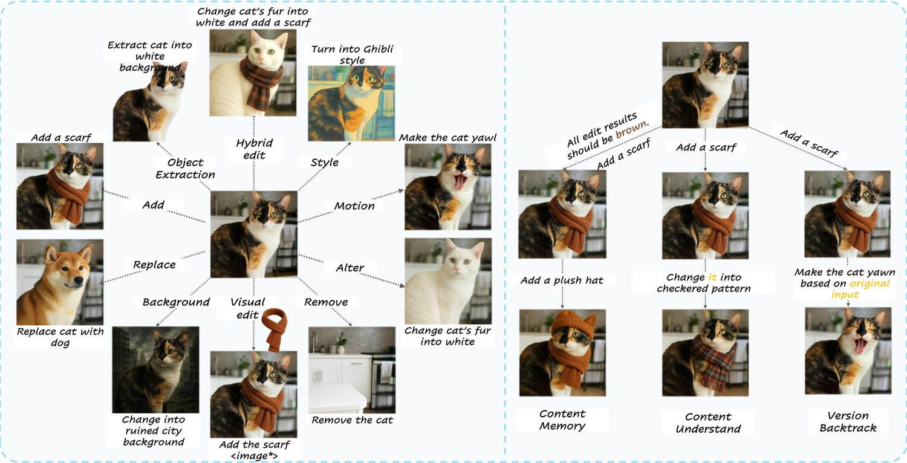
图 1：单轮与多轮编辑类型。（左）单轮任务包括添加、移除、替换、属性修改、背景替换、动作更改、风格、主体提取、视觉编辑与混合编辑。（右）多轮任务包括内容记忆、内容理解与版本回溯。
We define two categories of editing tasks: single-turn and multi-turn. Single-turn tasks focus on covering comprehensive and practical tasks, whereas multi-turn tasks integrate interactions across instructions and images in continuous editing scenarios.
我们把编辑任务定义为两类：单轮与多轮。单轮任务侧重覆盖全面且实用的任务，多轮任务则在连续编辑场景中整合指令与图像之间的交互。
Based on real-world editing practice, we divide single-turn tasks into four categories: local, global, visual, and hybrid edit, shown in Figure 1. Local Edit includes add, remove, replace, alter, motion change, and object extraction operations. Changes in color, material, or appearance are subsumed under alteration. Because editing human actions is a common use case [67], we also support motion changes specific to human subjects. Moreover, we introduce a novel object extraction task, for example—“extract the cat to a white background”—that isolates a specified subject on clean background while preserving identity consistency. This capability is valuable in many design pipelines [74] and is currently available only in GPT-4o-image [51]. Global Edit comprises background replacement and style or tone transfer. Visual Edit involves editing an image using a reference image. Given a reference object and an instruction, such as “add a scarf to the cat”, the edit task performs the edit while ensuring object consistency. Unlike AnyEdit [79], we omit segment-, sketch-, and layout-guided variants since such visual cues are seldom supplied in practice. Hybrid Edit contains two local edit operations applied to several objects within a single instruction. They are created by randomly combining add, remove, replace, and alter operations—for example, “add a scarf and change the cat’s fur colour to white”.
依据真实世界的编辑实践，我们把单轮任务分为四类：局部、全局、视觉与混合编辑，如图 1 所示。局部编辑包括添加、移除、替换、属性修改、动作更改与主体提取操作；颜色、材质或外观的改变归入属性修改。由于编辑人物动作是常见用例 [67]，我们还支持针对人物主体的动作更改。此外，我们引入了一种新颖的主体提取任务——例如“把猫提取到白色背景上”——它把指定主体分离到干净背景上，同时保持身份一致性。这一能力在许多设计流程 [74] 中很有价值，目前仅在 GPT-4o-image [51] 中可用。全局编辑包括背景替换与风格或色调迁移。视觉编辑指借助参考图像来编辑图像：给定参考对象与指令（如“给猫加一条围巾”），编辑任务在保证对象一致性的前提下完成编辑。与 AnyEdit [79] 不同，我们略去了基于分割、草图与布局的变体，因为实践中很少提供这类视觉线索。混合编辑指在一条指令中对多个对象施加两种局部编辑操作，通过随机组合添加、移除、替换与属性修改生成——例如“加一条围巾，并把猫的毛色改成白色”。
Getting insights from existing multi-turn understanding benchmarks [62, 23, 87] and practical requirements, we identify three major challenges in multi-turn image editing, which are content memory, content understanding, and version backtracking, illustrated in Figure 1. Content Memory concerns global constraints introduced early in the dialogue. If the initial instruction stipulates that “all generation must have a wooden texture”, subsequent turns do not need to restate this requirement; however, the constraint must still be honored. Content Understanding refers to the ability to interpret later instructions that rely on pronouns or omitted subjects. For example, after the first instructs, “Place a piece of clothing in the wardrobe on the left side of the image”, second turn may request, “Make it black”, and third turn, “Change into white”, both implicitly referring to the clothing added in first turn. Version Backtracking denotes the capability to edit based on earlier versions of edit results. For example, “Undo the previous change(or starting from the original input) ” We believe that these three challenges cover most of the difficulties and distinguishing features of multi-turn interactive editing, which frequently arise in practical applications.
借鉴现有多轮理解基准 [62, 23, 87] 并基于实际需求，我们识别出多轮图像编辑中的三大挑战：内容记忆、内容理解与版本回溯，如图 1 所示。内容记忆涉及对话早期引入的全局约束：若首条指令规定“所有生成内容必须具有木质纹理”，后续轮次无需重申该要求，但约束仍须被遵守。内容理解指理解依赖代词或省略主语的后续指令的能力：例如第一轮指示“把一件衣服放进图像左侧的衣柜里”，第二轮可要求“把它改成黑色”，第三轮“改成白色”，两者都隐式指代第一轮添加的衣物。版本回溯指基于编辑结果的早期版本继续编辑的能力，例如“撤销上一步修改（或从原始输入重新开始）”。我们认为，这三大挑战覆盖了多轮交互式编辑中大部分的困难与区分性特征，而这些情形在实际应用中频繁出现。
We adopt LAION-Aesthetics [58] as our primary corpus. Compared to other datasets [43, 45], it offers greater diversity in scenes, higher resolution, and a more comprehensive range of object classes. We retain only images whose shorter side exceeds pixels and whose aesthetic score [58] is above , resulting in a image subset. GPT-4o [1] is then used to regenerate concise captions and to extract editable objects and background nouns. Next, each candidate entity is localised with an open-vocabulary detector [8], and the resulting bounding boxes are refined into segmentation masks with SAM2 [57]. Every object and background region thus obtains both a bounding box and a mask. Because detection and segmentation are imperfect, we crop each object by its mask and compute (i) CLIPScore [54] between the crop and its object name, (ii) area ratio. Regions with low similarity or negligible area are discarded, ensuring that the remaining targets are accurately identified and visually salient for subsequent editing. Specifically, we ensure that the edited area constitutes more than 40% of the image for the background-changing task. For motion change Edit, we additionally collect image pairs from Open-Sora Plan [39] in-house videos that depict only people. Frames are temporally subsampled and their motions are annotated by GPT-4o [51], yielding the motion change subset.
我们采用 LAION-Aesthetics [58] 作为主要语料。相比其他数据集 [43, 45]，它在场景上更具多样性、分辨率更高、对象类别覆盖更全。我们只保留短边超过 像素且美学分数 [58] 高于 的图像，得到 的图像子集。随后用 GPT-4o [1] 重新生成简洁描述，并抽取可编辑对象与背景名词。接着，用开放词汇检测器 [8] 对每个候选实体定位，再用 SAM2 [57] 把得到的边界框细化为分割掩码，使每个对象与背景区域都同时具备边界框与掩码。由于检测与分割并不完美，我们按掩码裁剪每个对象，并计算 (i) 裁剪图与对象名称之间的 CLIPScore [54]、(ii) 面积占比；相似度偏低或面积过小的区域予以剔除，以确保剩余目标被准确识别，且在视觉上足够显著，便于后续编辑。具体地，对背景替换任务，我们确保被编辑面积占图像 40% 以上。对于动作更改编辑，我们额外从 Open-Sora Plan [39] 的内部视频中收集 个图像对，这些视频只描绘人物；对帧作时间下采样，并由 GPT-4o [51] 标注其动作，得到动作更改子集。
We provide the original image caption, edit type, bounding box, and target object as conditioning information for prompt generation. Because precise localization of the target object is essential for successful editing, we instruct the language model to embed the position of object and approximate size in the editing instruction, using the bounding box as a reference. Less capable LLMs [66, 21] can introduce knowledge bias and produce low-quality prompts [79, 86]; therefore, we employ the state-of-the-art large language model [1], which not only understands diverse instruction formats and generates concept-rich editing instructions but also encodes spatial cues with high fidelity. For multi-turn prompt generation, we supply a few in-context examples and ask the model to produce the entire dialogue in a single pass; we then split the output into individual turns. To balance task complexity and operability, each dialogue is limited to two or three turns and is constructed from four basic operations: add, remove, replace, and alter.
我们把原始图像描述、编辑类型、边界框与目标对象作为提示词生成的条件信息。由于准确定位目标对象对编辑成功至关重要，我们要求语言模型以边界框为参照，在编辑指令中嵌入对象的位置与大致尺寸。能力较弱的 LLM [66, 21] 会引入知识偏见并产出低质量提示词 [79, 86]，因此我们采用当前最优的大语言模型 [1]：它既理解多样的指令格式、生成概念丰富的编辑指令，又能高保真地编码空间线索。对于多轮提示词生成，我们提供少量上下文示例，要求模型一次性产出整段对话，再把输出切分为单独轮次。为在任务复杂性与可操作性之间取得平衡，每段对话限制在两到三轮，并由添加、移除、替换、属性修改四种基本操作构成。
We select state-of-the-art generative models, such as FLUX [13] and SDXL [53], as base models. To achieve precise and controllable editing, we employ plug-ins, e.g., IP-Adapters [78], ControlNet [84], and Canny/Depth LoRA [26]. Based on these models and components, we construct data manufacturing pipelines tailored to each editing scenario. Within these pipelines, we incorporate novel techniques from the community to generate high-quality data. For instance, in visual edit tasks, we leverage the in-context capabilities of the FLUX architecture to maintain consistency and use FLUX-Redux to control semantics. Images produced by our method consistently outperform those in existing datasets [79, 86, 83, 18], exhibiting higher aesthetic quality and greater edit fidelity, as quantified in Section 3.4. In multi-turn dialogues, we reuse the same workflow, treating each request as an independent editing task.
我们选用 FLUX [13] 与 SDXL [53] 等当前最优生成模型作为基座模型。为实现精确可控的编辑，我们使用 IP-Adapters [78]、ControlNet [84] 与 Canny/Depth LoRA [26] 等插件。在这些模型与组件之上，我们针对每种编辑场景构建量身定制的数据生产流程，并在流程中吸收社区的新技术以生成高质量数据。例如，在视觉编辑任务中，我们利用 FLUX 架构的上下文能力维持一致性，并用 FLUX-Redux 控制语义。我们方法生成的图像持续优于现有数据集 [79, 86, 83, 18]，在美学质量与编辑保真度上都更高，第 3.4 节给出了量化结果。在多轮对话中，我们复用同一工作流，把每次请求视为独立的编辑任务。
Since we have already performed a coarse filter during data preparation based on object area, CLIP score, and aesthetic score, we employ GPT-4o [1] to apply a precise filter in the post-processing stage. For each edit pair, GPT-4o assigns a quality score based on a prompt-guided rubric specific to the corresponding edit type. We provide detailed scores and brief reasons from gpt for each pair to enable users to select a subset based on their needs.
由于在数据准备阶段已基于对象面积、CLIP 分数与美学分数做了粗过滤，我们在后处理阶段改用 GPT-4o [1] 施加精细过滤。对每个编辑对，GPT-4o 依据对应编辑类型专属的、由提示词引导的评分细则给出质量分数。我们同时提供每对的细致分数与来自 gpt 的简要理由，便于用户按需筛取子集。
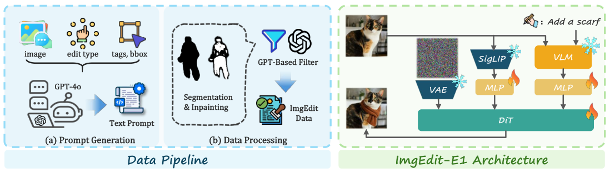
图 2：数据流程与模型架构。（左）我们的流程包括预过滤、定位与分割、描述生成、局部重绘与后处理，使用了大量当前最优模型。（右）ImgEdit-E1 以 Qwen2.5-VL-7B [4] 作为文本与图像编码器，由 SigLIP [68] 提供底层特征，并以 FLUX [13] 作为 DiT 骨干网络。
To evaluate the quality of the collected data, we train ImgEdit-E1 on ImgEdit. ImgEdit-E1 integrates a vision-language model (VLM) [4], a vision encoder [68], and a Diffusion-in-Transformer(DiT) backbone [13], as illustrated in Figure 2. The edit instruction and the original image are jointly fed into VLM, while the image is processed simultaneously by the vision encoder. The hidden states of VLM and the visual feature of the vision encoder are separately projected by MLPs and then concatenated, forming the text-branch input to DiT. Training proceeds in two stages [41], first optimizing MLPs and then jointly fine-tuning FLUX and MLPs.
为评估所采集数据的质量，我们在 ImgEdit 上训练了 ImgEdit-E1。如图 2 所示，ImgEdit-E1 整合了视觉语言模型（VLM）[4]、视觉编码器 [68] 与 Diffusion-in-Transformer（DiT）骨干网络 [13]。编辑指令与原始图像一并输入 VLM，同时图像也由视觉编码器处理。VLM 的隐状态与视觉编码器的视觉特征分别经多层感知机（MLP）投影后拼接，构成 DiT 的文本分支输入。训练分两个阶段进行 [41]：先优化 MLP，再联合微调 FLUX 与 MLP。
ImgEdit comprises 1.2 million high-quality image-editing pairs spanning 13 editing categories, including 110k multi-turn examples. Compared with existing datasets [79, 18, 86, 83, 28, 6], ImgEdit offers richer semantics, more detailed prompts, higher resolutions, greater editing accuracy, and overall superior visual fidelity. In particular, the object extraction and visual edit subsets constitute the first editing tasks with high subject consistency.
ImgEdit 包含 120 万高质量图像编辑对，涵盖 13 个编辑类别，其中含 11 万多轮样本。与现有数据集 [79, 18, 86, 83, 28, 6] 相比，ImgEdit 语义更丰富、提示词更细致、分辨率更高、编辑更准确，视觉保真度整体更优。特别是主体提取与视觉编辑子集，构成了首批具有高主体一致性的编辑任务。
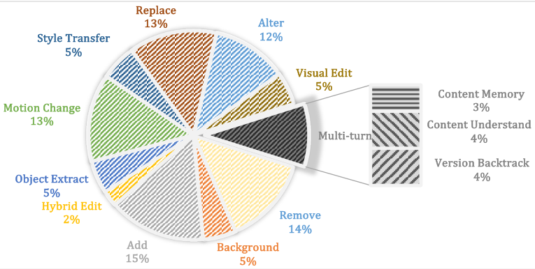
图 3：ImgEdit 的数据构成。
The average short-side resolution of ImgEdit is 1280 pixels, whereas most competing corpora fall below this threshold. In terms of prompt diversity, ImgEdit contains 8.7k unique words. To assess editing accuracy, we randomly sampled 1,000 instances from each dataset and evaluated them with GPT-4o [51], ImgEdit achieves the highest score. We further quantified the edited area for local edits tasks by pixel-wise differencing between the source and edited images; compared with other corpora, ImgEdit includes far fewer examples with small modification regions. Moreover, when a state-of-the-art editing-region detector [75] is applied, edits in ImgEdit are substantially harder to locate, indicating higher image quality. Comprehensive statistics are provided in Figure 3 and Table 1, with additional analyses and examples in the appendix.
ImgEdit 的平均短边分辨率为 1280 像素，而多数竞品语料低于这一水平。在提示词多样性方面，ImgEdit 包含 8.7k 个不同单词。为评估编辑准确性，我们从每个数据集随机采样 1,000 个样本并用 GPT-4o [51] 评估，ImgEdit 得分最高。我们进一步通过对源图与编辑图做逐像素差分，量化局部编辑任务的编辑面积；与其他语料相比，ImgEdit 中修改区域过小的样本远少得多。此外，当使用当前最优的编辑区域检测器 [75] 时，ImgEdit 中的编辑位置明显更难被定位，说明图像质量更高。完整的统计结果见图 3 与表 1，更多分析与示例见附录。
ImgEdit-Bench provides a comprehensive evaluation for both single- and multi-turn editing tasks. Section 4.1 outlines the composition of the benchmark dataset, Section 4.2 defines the evaluation metrics, and Section 4.3 introduces ImgEdit-Judge, a model to evaluate image editing tasks.
ImgEdit-Bench 为单轮与多轮编辑任务提供全面评估。第 4.1 节概述基准数据集的构成，第 4.2 节定义评测指标，第 4.3 节介绍用于评估图像编辑任务的模型 ImgEdit-Judge。
We divide the capabilities of model into two categories: basic proficiency and performance in complex scenarios. The basic edit suite measures the ability to complete easy tasks. The Understanding-Grounding-Editing (UGE) test suite assesses model capacity to perform understanding, grounding, and editing simultaneously within a single prompt. Finally, the multi-turn evaluation evaluate ability in content understanding, content memory, and version backtracking.
我们把模型的能力分为两类：基础能力与复杂场景下的表现。基础编辑套件衡量完成简单任务的能力；理解-定位-编辑（UGE）测试套件评估模型在单条提示词内同时完成理解、定位与编辑的能力；最后，多轮评测考察内容理解、内容记忆与版本回溯方面的能力。
Our benchmark comprises nine common image-editing tasks—add, remove, alter, replace, style transfer, background change, motion change, hybrid edit, and cut-out—evaluated on images that were manually collected from the Internet. To ensure semantic diversity, we select ten representative concepts from each of six super-categories (human, transportation, nature, animals, architecture, and necessities). For the add task, we pair each of ten relatively uncluttered background images with five prompts per concept. For the remove, alter, replace, cut-out, and hybrid-edit tasks, we chose photographs that contain few objects and a visually salient main subject. Style transfer is tested on popular styles; background change uses scenes suitable for substitution; motion change is assessed on human-centric images. All instructions are initially generated by GPT-4o [1] and then manually filtered. The resulting benchmark comprises 734 test cases with prompt lengths ranging from short to elaborate.
我们的基准包含九项常见图像编辑任务——添加、移除、属性修改、替换、风格迁移、背景替换、动作更改、混合编辑与抠图——在人工从互联网收集的图像上评测。为保证语义多样性，我们从六个大类（人物、交通工具、自然、动物、建筑与日用品）中各选取十个代表性概念。对于添加任务，我们把十张相对简洁的背景图与每个概念的五条提示词配对。对于移除、属性修改、替换、抠图与混合编辑任务，我们选取包含少量对象、主体视觉显著的照片。风格迁移在流行风格上测试；背景替换使用适合替换的场景；动作更改在以人物为中心的图像上评估。所有指令先由 GPT-4o [1] 生成，再经人工筛选。最终基准包含 734 个测试用例，提示词长度从简短到详尽不等。
We manually curated 47 complex images from the Internet that pose diverse challenges—partially occluded targets, scenes with multiple instances of the same category, camouflaged or visually inconspicuous objects, and uncommon editing subjects. For each image, we devised editing prompts that require spatial reasoning, multi-object coordination, compound or fine-grained operations, and large-scale modifications, thereby elevating the difficulty of comprehension, localization, and manipulation within a single prompt.
我们从互联网人工挑选了 47 张复杂图像，它们带来多样化的挑战：目标被部分遮挡、场景中存在同类多实例、对象被伪装或视觉上不显眼，以及不常见的编辑主体。对每张图像，我们设计了需要空间推理、多对象协调、复合或细粒度操作以及大尺度修改的编辑提示词，从而在单条提示词内提升理解、定位与操作的难度。
For the multi-turn evaluation, we evaluate real-world use cases across three dimensions—content memory, content understanding, and version backtracking. Since it is very easy to judge whether the model have the ability to do multi-turn editing, we do not use many examples. We select 10 images for each tasks and manually designed prompts, resulting in 3 interaction turns for each case.
在多轮评测中，我们从内容记忆、内容理解与版本回溯三个维度评估真实世界的使用场景。由于判断模型是否具备多轮编辑能力非常容易，我们没有使用大量样本。我们为每个任务选取 10 张图像并人工设计提示词，每个用例包含 3 轮交互。
表 2：开源编辑基准的关键属性。现有基准在难度分层、多轮支持与评测指标上的不足，凸显了 ImgEdit-Bench 的必要性。
| Benchmark | #Size | #Sub-Tasks | Human Filtering | Difficult-Task Support | Multi-Turn Support | Metrics |
| EditBench [70] | 240 | 1 | ✗ | ✗ | ✗ | CLIP |
| EditVal [5] | 648 | 13 | ✓ | ✗ | ✗ | CLIP, VLM, manual |
| EmuEdit [59] | 3055 | 7 | ✗ | ✗ | ✗ | L1, CLIP, DINO |
| MagicBrush [83] | 1053 | 9 | ✓ | ✗ | ✗ | L1, L2, CLIP, DINO |
| AnyEdit [79] | 1250 | 25 | ✗ | ✗ | ✗ | L1, CLIP, DINO |
| I2EBench [48] | 2240 | 16 | ✓ | ✗ | ✗ | GPT(1 dim.) |
| ImgEdit-Bench | 811 | 14 | ✓ | ✓ | ✓ | GPT(3 dim.), Fake Detection |
We evaluated model performance along three dimensions: instruction adherence, image-editing quality, and detail preservation. Instruction adherence captures both prompt comprehension and conceptual understanding of the corresponding prompts. Because instruction adherence is fundamental to the editing task and cannot be fully separated from the other two aspects, the scores for image-editing quality and detail preservation are capped at the instruction-adherence score. Image-editing quality measures how precisely the target region is manipulated, whereas detail preservation measures the fidelity of regions that should remain unchanged. We employ the state-of-the-art Vision Language Model GPT-4o [1] to assign 1-5 ratings. For each task, we provide detailed scoring rubrics based on the three dimensions. In the multi-turn setting, human evaluators provided yes-or-no ratings for model output, following comprehensive guidelines designed to assess multi-turn capability. Additionally, we introduce a fake score to quantify how fake a generated image appears. To compute this, we use FakeShield [75], the latest open-source forensic detector that localizes editing artifacts within images. Specifically, we evaluate the recall (treating fake as the positive class) on various image-editing datasets and compare the results against ours. This allows us to assess and validate the visual realism and editing quality of our generated images.
我们从三个维度评估模型性能：指令遵循度、图像编辑质量与细节保持。指令遵循度同时涵盖对提示词的理解与对相应提示词的概念性理解。由于指令遵循是编辑任务的基础，且无法与另外两方面完全分离，图像编辑质量与细节保持的得分以指令遵循度得分为上限。图像编辑质量衡量目标区域被操作的精确程度，细节保持则衡量本应保持不变区域的保真度。我们采用当前最优的视觉语言模型 GPT-4o [1] 给出 1-5 分评级，并为每项任务提供基于三个维度的细致评分细则。在多轮设置下，人类评估者依照为考察多轮能力而设计的全面指南，对模型输出作“是/否”判定。此外，我们引入伪造分数（fake score）来量化生成图像看起来有多假。具体做法是：用最新的开源取证检测器 FakeShield [75] 定位图像中的编辑痕迹，在各个图像编辑数据集上评估召回率（以伪造为正类），并与我们的结果对比。借此可以评估和验证我们所生成图像的视觉真实感与编辑质量。
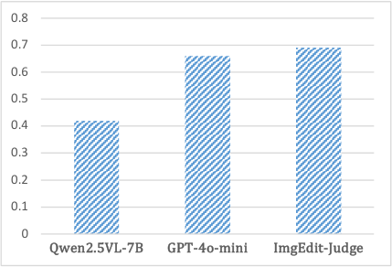
图 4：与人类偏好的一致率。
Because scores produced by vision–language models (VLMs) are more reasonable than traditional similarity metrics [54, 7], and no open-source VLM evaluator for image editing currently exists, we constructed a task-balanced and score-balanced corpus of post-processed rating records and used it to fine-tune Qwen2.5-VL-7B [4]. We then performed a human study in which each image was rated by both human annotators, Qwen2.5VL-7B, ImgEdit-Judge, and GPT-4o-mini, and selected 60 images for detailed analysis. A judgment made by the model is considered correct when its score differs from the corresponding human score by no more than one point. As illustrated in Figure 4, ImgEdit-Judge matches human judgments more closely than GPT-4o-mini and Qwen2.5-VL-7B, reaching almost agreement and surpassing the original Qwen2.5-VL by a substantial margin.
由于视觉语言模型（VLM）给出的分数比传统相似度指标 [54, 7] 更合理，而目前尚不存在面向图像编辑的开源 VLM 评估器，我们构建了一个任务均衡、分数均衡的语料，包含 条后处理评分记录，并用以微调 Qwen2.5-VL-7B [4]。随后我们开展了一项人工研究：每幅图像同时由人类标注员、Qwen2.5VL-7B、ImgEdit-Judge 与 GPT-4o-mini 打分，并选取 60 幅图像做细致分析。当模型的评分与对应人类评分相差不超过 1 分时，即判定该判断正确。如图 4 所示，ImgEdit-Judge 比 GPT-4o-mini 与 Qwen2.5-VL-7B 更贴近人类判断，一致率接近 ，并大幅超过原始的 Qwen2.5-VL。
In this section we conduct a comprehensive evaluation of existing editing models and ImgEdit-E1, Section 5.1 delineates the models under examination and experimental setup, Section 5.2 offers a qualitative and quantitative analysis of the results, and Section 5.3 presents further discussion.
本节对现有编辑模型与 ImgEdit-E1 开展全面评估：第 5.1 节说明受检模型与实验设置，第 5.2 节给出结果的定性与定量分析，第 5.3 节作进一步讨论。
We run our single-turn benchmark on a wide range of image-editing models: the close-source model includes GPT-4o-Image [51] (since Gemini-2.0-Flash [19] do not permit API request), while the open-source models include Step1X-Edit [46], Ultra-Edit [86], AnySD [79], MagicBrush [83], Instruct-Pix2Pix [6], and ImgEdit-E1. Except for ImgEdit-E1 and Step1X-Edit, which use a Vision-Language Model as the text encoder and a Diffusion Transformer as the backbone, all other open-source models rely on traditional UNet structures for diffusion models and pretrained text encoders [55, 54]. AnySD additionally incorporates a task-aware MoE block [40, 29].
我们在广泛的图像编辑模型上运行单轮基准：闭源模型包括 GPT-4o-Image [51]（Gemini-2.0-Flash [19] 不允许 API 请求）；开源模型包括 Step1X-Edit [46]、Ultra-Edit [86]、AnySD [79]、MagicBrush [83]、Instruct-Pix2Pix [6] 与 ImgEdit-E1。除 ImgEdit-E1 与 Step1X-Edit 采用视觉语言模型作为文本编码器、以 Diffusion Transformer 作为骨干网络外，其余开源模型均依赖传统的 UNet 扩散结构与预训练文本编码器 [55, 54]。AnySD 还额外引入了任务感知的 MoE 模块 [40, 29]。
All models are evaluated with identical prompts and images, and editing and evaluation are performed at the native resolution of each model. UltraEdit [86] and AnySD [79] generate outputs at pixels, whereas the remaining models generate outputs at pixels. Each experiment is repeated three times per model, and the mean score across the three runs is reported as the final result. We evaluate the multi-turn ability for the only two models that support multi-turn editing: GPT-4o-Image and Gemini-2.0-Flash.
所有模型使用相同的提示词与图像评测，编辑与评测均在各模型的原生分辨率下进行。UltraEdit [86] 与 AnySD [79] 生成 像素的输出，其余模型生成 像素的输出。每个模型的每项实验重复三次，取三次运行的平均得分作为最终结果。我们仅对支持多轮编辑的两个模型（GPT-4o-Image 与 Gemini-2.0-Flash）评估多轮能力。
图 5：各模型在各子任务上的得分。
We first present a comprehensive qualitative evaluation of different methods, with results displayed in Figure 5. Open-source models and closed-source model exhibit a significant performance gap, with GPT-4o-image [51] outperforming open-source models across all dimensions, only slightly lagging in some challenging tasks. GPT-4o-Image also has highest UGE scores, indicating stronger understanding, localization, and editing capabilities. Among the open-source models, ImgEdit-E1 and Step1X-Edit perform the best, achieving results close to closed-source model on a few tasks. ImgEdit-E1 demonstrates good performance across all tasks, particularly surpasses other open-sourced models in object extraction and hybrid edit tasks due to its inclusion of high-quality data. Step1X-Edit exhibits similar performance to ImgEdit-E1 but falls short in background change, attribute alteration, and hard tasks. AnySD shows relatively average performance across various tasks but does not achieve outstanding results, possibly due to the broad range of editing tasks in its dataset, but lacks high-quality data. UltraEdit performs poorly in the removal task as it does not include this task in its dataset. MagicBrush and InstructPix2Pix suffer from issues such as image distortion and failure to follow instructions due to the quality and diversity of their training data and overly simple model structure. For all models, the editing outputs receive extremely high fake scores, indicating that detection models can still easily identify them. The scores of all models are provided in the appendix.
我们首先给出不同方法的综合定量评估，结果如图 5 所示。开源模型与闭源模型存在显著性能差距：GPT-4o-image [51] 在所有维度上都优于开源模型，仅在某些高难任务上略有落后；它的 UGE 得分也最高，说明其理解、定位与编辑能力更强。在开源模型中，ImgEdit-E1 与 Step1X-Edit 表现最好，在少数任务上接近闭源模型的结果。ImgEdit-E1 在各任务上表现均衡，尤其因包含高质量数据，在主体提取与混合编辑任务上超过其他开源模型。Step1X-Edit 与 ImgEdit-E1 表现相近，但在背景替换、属性修改与困难任务上有所不及。AnySD 在各类任务上表现中等，没有取得突出结果，可能源于其数据集覆盖的编辑任务过广却缺乏高质量数据。UltraEdit 在移除任务上表现很差，因为其数据集不包含该任务。MagicBrush 与 InstructPix2Pix 则受训练数据质量与多样性不足、模型结构过于简单的影响，存在图像失真与不遵循指令等问题。所有模型的编辑输出都获得极高的伪造分数，说明检测模型仍能轻易识别它们。各模型的得分详见附录。
For multi-turn tasks, GPT-4o-Image and Gemini-2.0-flash exhibits version backtracking capabilities within two turns. Models both possess minimal content memory and content understanding capabilities which may occasionally experience misunderstandings of some references or difficulty retaining premises in certain cases. Overall, these models provide inadequate support for multi-turn edits. More results are discussed in the appendix.
在多轮任务上，GPT-4o-Image 与 Gemini-2.0-flash 在两轮之内展现出版本回溯能力。两个模型都只具备最低限度的内容记忆与内容理解能力，偶尔会误解某些指代，或在某些情况下难以记住前提。总体而言，这些模型对多轮编辑的支持仍不充分。更多结果在附录中讨论。
We select representative examples of diverse tasks for qualitative analysis, as shown in Figure 6. Only ImgEdit-E1 and GPT-4o-Image successfully preserves the snow on the bike while changing its color. In tasks involving object removal, AnySD and Step1X-Edit produces blurry results, Gemini incorrectly removes the street light together, and other models fail to follow instruction. In contrast, ImgEdit-E1 and GPT-4o-Image complete the task perfectly. ImgEdit-E1 and Step1X-Edit align most closely with the prompt in background alteration tasks among all open-source models. For replacing tasks, the results of closed-source models are noticeably more natural, while many open-source models fail to finish the edit. For color modification tasks, only ImgEdit-E1 and the closed-source model accurately follow the instructions while preserving intricate details. Furthermore, only GPT-4o-Image and ImgEdit-E1 successfully perform the object extraction tasks.
我们选取各任务的代表性示例作定性分析，如图 6 所示。在改变自行车颜色的同时，只有 ImgEdit-E1 与 GPT-4o-Image 成功保留了车上的积雪。在对象移除任务中，AnySD 与 Step1X-Edit 产生模糊结果，Gemini 错误地把路灯一并移除，其他模型则未能遵循指令；相比之下，ImgEdit-E1 与 GPT-4o-Image 完美完成了任务。在背景替换任务中，ImgEdit-E1 与 Step1X-Edit 在所有开源模型里与提示词契合得最好。在替换任务中，闭源模型的结果明显更自然，而许多开源模型无法完成编辑。在颜色修改任务中，只有 ImgEdit-E1 与闭源模型能准确遵循指令，同时保留精细细节。此外，只有 GPT-4o-Image 与 ImgEdit-E1 成功完成了主体提取任务。
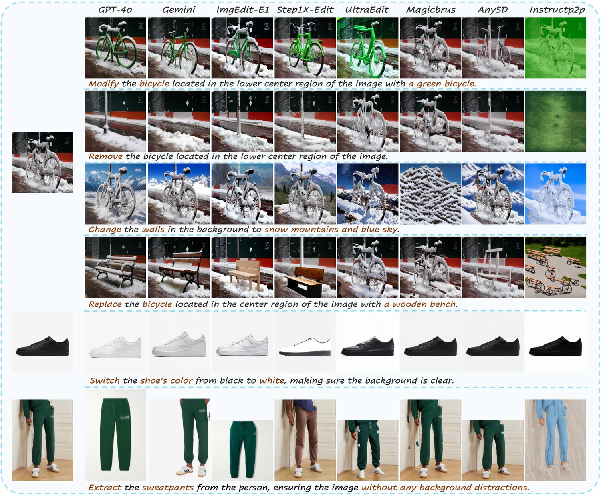
图 6：不同编辑模型之间的定性对比。ImgEdit-E1 在指令遵循度、细节保持与视觉质量上超越了所有现有开源模型，取得了可与 GPT-4o 相媲美的结果。此外，得益于 ImgEdit 引入的新颖编辑任务，它能够在保持身份一致性的前提下完成编辑与提取任务。
Based on our benchmark results, we identify three key factors that influence editing model performance: instruction understanding, grounding, and editing. Understanding ability is defined as the capacity of a model to comprehend editing instructions, which is largely determined by the text encoder and strongly affects editing performance. Conventional models using encoders such as T5 [55] or CLIP [54] manage simple tasks (e.g., style transfer) but perform poorly on complex, region-specific tasks. Our evaluations show that ImgEdit-E1 and Step1X-Edit substantially outperform other open-source models, underscoring the importance of stronger text encoders and more abundant text features. Grounding ability refers to the capacity to accurately identify and localize the specific region requiring editing, which is contingent upon both its ability to comprehend instructions and its visual perception capabilities. In our evaluations, ImgEdit-E1 exhibits superior performance compared to existing open-source editing models in tasks that demand precise localization, such as Attribute Alteration and Object Extraction, highlighting the importance of spatial information in prompts. Editing ability is the capacity to generalise across editing operations—depends chiefly on the quality, size, and diversity of the training datasets. The scarcity of high-quality data for Object Extraction yields poor performance on these tasks for other models, including GPT-4o [51], reaffirming the necessity of comprehensive, high-quality editing datasets.
基于我们的基准结果，我们识别出影响编辑模型性能的三个关键因素：指令理解、定位与编辑。理解能力指模型理解编辑指令的能力，主要由文本编码器决定，并对编辑性能影响很大。使用 T5 [55] 或 CLIP [54] 等编码器的传统模型能应付简单任务（如风格迁移），但在复杂的、针对特定区域的任务上表现很差。我们的评测显示，ImgEdit-E1 与 Step1X-Edit 大幅优于其他开源模型，印证了更强的文本编码器与更丰富的文本特征的重要性。定位能力指准确识别并定位待编辑区域的能力，它同时取决于模型理解指令的能力与其视觉感知能力。在我们的评测中，ImgEdit-E1 在属性修改、主体提取等需要精确定位的任务上优于现有开源编辑模型，凸显了提示词中空间信息的重要性。编辑能力指跨编辑操作的泛化能力，主要取决于训练数据集的质量、规模与多样性。主体提取任务缺乏高质量数据，导致其他模型（包括 GPT-4o [51]）在这些任务上表现不佳，再次印证了全面、高质量编辑数据集的必要性。
This paper advances the image editing field by introducing ImgEdit, which overcomes data-quality limitations in existing datasets, introduces practical editing categories, and offers a robust pipeline for future dataset construction. Also, the strong performance of ImgEdit-E1 validates the reliability of ImgEdit. Furthermore, ImgEdit-Bench evaluates models across novel dimensions, offering insights into data selection and architectural design for image-editing models. By providing high-quality datasets, powerful editing methods, and comprehensive evaluation benchmarks, we believe our work helps close the gap between open-source approaches and state-of-the-art closed-source models and drives progress across the entire field of image editing.
本文通过提出 ImgEdit 推动了图像编辑领域的发展：它克服了现有数据集在数据质量上的局限，引入了实用的编辑类别，并为未来数据集构建提供了稳健的流程。同时，ImgEdit-E1 的强劲表现验证了 ImgEdit 的可靠性。此外，ImgEdit-Bench 从全新的维度评估模型，为图像编辑模型的数据选择与架构设计提供了洞见。通过提供高质量数据集、强大的编辑方法与全面的评测基准，我们相信本工作有助于弥合开源方法与当前最优闭源模型之间的差距，并推动整个图像编辑领域向前发展。
We conducted an experiment utilizing GPT-4o to generate detailed image descriptions, which were subsequently input into Flux to synthesize new images. Remarkably, despite Flux lacking access to the original images, the generated images exhibited a notable degree of similarity to the originals. Based on these findings, we posit that a text encoder with enhanced comprehension capabilities and extended context length would significantly improve editing tasks. To this end, we employed Qwen2.5-VL-7B as our text encoder, which supports a context length of up to 8k tokens with outstanding understanding ability. Additionally, Step1X-Edit also leveraged embeddings from the Vision-Language Model (VLM) as input for textual features, achieving superior results and thereby validating our hypothesis.
我们开展了一项实验：用 GPT-4o 生成细致的图像描述，再输入 FLUX 合成新图像。值得注意的是，尽管 FLUX 无法访问原始图像，生成的图像却与原始图像呈现出可观的相似度。基于这一发现，我们认为，具备更强理解能力与更长上下文长度的文本编码器将显著改善编辑任务。为此，我们采用 Qwen2.5-VL-7B 作为文本编码器——它支持最长 8k token 的上下文，理解能力出色。此外，Step1X-Edit 同样采用视觉语言模型（VLM）的嵌入作为文本特征输入，取得了优越结果，从而验证了我们的假设。
The primary distinction between ImgEdit-E1 and the Step1X-Edit model lies in the choice of vision encoder and how the vision features are utilized. In our model, we employed Siglip as the vision encoder, and its vision features were concatenated with the Vision-Language Model (VLM) features to serve as input for the text branch of Flux. In contrast, Step1X-Edit used a Variational Autoencoder (VAE) as the vision encoder, where the vision features were concatenated with noise to serve as input for the image branch. Our decision to use Siglip and its integration with text features was informed by the following findings: (1) The Flux-Redux model demonstrated that replacing text branch features with Siglip features enables basic control over the structural elements of an image. (2) OminiControl [65] also injecting low-level information using VAE, but it requires training a separate model for each task. Step1X-Edit, however, is unable to handle tasks such as generate canny or pose. This raises the question of whether VAE features introduce conflicts between different tasks, which remains unresolved. Based on these observations, we chose Siglip as the vision encoder to provide low-level information.
ImgEdit-E1 与 Step1X-Edit 模型的主要区别在于视觉编码器的选择以及视觉特征的使用方式。我们的模型采用 Siglip 作为视觉编码器，其视觉特征与视觉语言模型（VLM）特征拼接，共同作为 FLUX 文本分支的输入。相比之下，Step1X-Edit 以变分自编码器（VAE）作为视觉编码器，视觉特征与噪声拼接后作为图像分支的输入。我们选择 Siglip 并将其与文本特征融合，基于以下发现：(1) Flux-Redux 模型表明，用 Siglip 特征替换文本分支特征可实现对图像结构元素的基本控制。(2) OminiControl [65] 同样用 VAE 注入底层信息，但它需要为每个任务单独训练模型；而 Step1X-Edit 无法处理生成 canny 或姿态等任务。这就引出一个问题：VAE 特征是否会在不同任务之间引入冲突——这一点尚无定论。基于上述观察，我们选择 Siglip 作为视觉编码器以提供底层信息。
Flux is the current state-of-the-art in generative model, distinguished by its highly effective dual-stream architecture for integrating semantics and images. Moreover, its pre-trained weights substantially reduce training costs, making it an ideal foundation for our generative model.
FLUX 是当前最优的生成模型，其融合语义与图像的双流架构极为高效。此外，其预训练权重大幅降低了训练成本，使其成为我们生成模型的理想基础。
In the first stage of training, we freeze all parameters of Qwen2.5-VL and Flux, allowing only the MLP connecting Qwen2.5-VL to Flux to be trainable. The model is optimized using a global batch size of 128 and using prodigy [50], an adaptive optimizer with a learning rate set to 1.0. In the second stage, the Siglip encoder (Siglip v2-SO/16@512) is integrated to Flux using MLP, which is initialized from the pretrained Flux-Redux model. During this stage, the trainable parameters include the MLP connecting Siglipv2 [68] to Flux, the MLP connecting Qwen2.5VL to Flux, and the image branch of Flux. The second stage also employs the prodigy optimizer with a global batch size of 128. The model is trained for 50,000 steps in the first stage and 10,000 steps in the second stage.
在训练的第一阶段，我们冻结 Qwen2.5-VL 与 FLUX 的全部参数，只训练连接 Qwen2.5-VL 与 FLUX 的 MLP。模型使用全局批大小 128 与自适应优化器 prodigy [50] 优化，学习率设为 1.0。在第二阶段，用 MLP 把 Siglip 编码器（Siglip v2-SO/16@512）接入 FLUX，该 MLP 由预训练的 Flux-Redux 模型初始化。此阶段的可训练参数包括连接 Siglipv2 [68] 与 FLUX 的 MLP、连接 Qwen2.5VL 与 FLUX 的 MLP，以及 FLUX 的图像分支。第二阶段同样采用 prodigy 优化器，全局批大小为 128。模型在第一阶段训练 50,000 步，在第二阶段训练 10,000 步。
As the core contribution of this paper is not ImgEdit-E1, we did not perform detailed ablation studies on its model structure, training data, or training process. The architecture of ImgEdit-E1 extends beyond that of a simple editing model; with additional training, it has the potential to evolve into a unified generative model capable of text-to-image generation, image editing, and low-level image processing tasks(e.g., generating canny or depth image). However, while ImgEdit-E1’s editing capabilities are not yet optimal for downstream scenarios such as text generation, this limitation is shared by all current open-source models. Future work will aim to address these limitations and explore the highlighted aspects in greater depth.
由于本文的核心贡献并非 ImgEdit-E1，我们没有对其模型结构、训练数据或训练过程开展细致的消融研究。ImgEdit-E1 的架构不止于一个简单的编辑模型：经过更多训练，它有望演进为一个统一的生成模型，能够处理文本到图像生成、图像编辑与底层图像处理任务（如生成 canny 图或深度图）。然而，尽管 ImgEdit-E1 的编辑能力在文本生成等下游场景中尚非最优，这一局限是当前所有开源模型共有的。未来工作将着力解决这些局限，并对上述方面作更深入的探索。
We list the word clouds for each task as follows 7:
我们在下面列出各任务的词云 7：
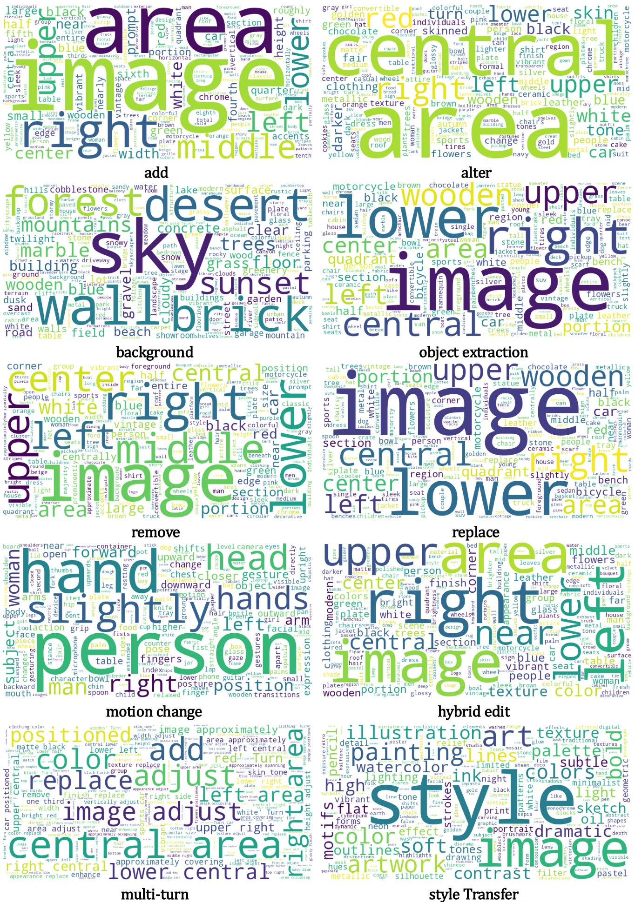
图 7：不同任务的词云。
We present detailed dataset statistics for all editing types in ImgEdit in Table 3. Post-processing results are also provided in the dataset, enabling users to apply additional filtering based on these results.
我们在表 3 中给出 ImgEdit 全部编辑类型的详细数据集统计。数据集中同时提供了后处理结果，便于用户依据这些结果施加额外过滤。
表 3：ImgEdit 数据集的详细统计。
| Type | #Image pairs |
| Add | 175467 |
| Remove | 160646 |
| Replace | 159395 |
| Alter | 135509 |
| Extraction | 59450 |
| Background | 58090 |
| Hybrid Edit | 28590 |
| Visual Edit | 59450 |
| Style | 64846 |
| Motion Change | 159008 |
| Content Memory | 30861 |
| Content Understand | 42139 |
| Version Backtrack | 42023 |
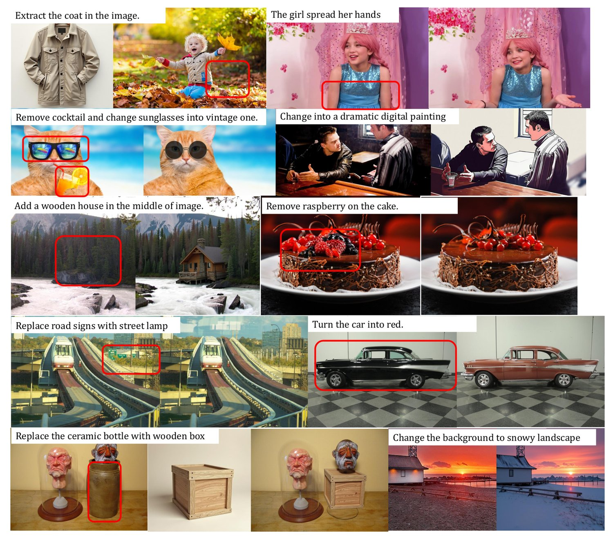
图 8：单轮数据样本。
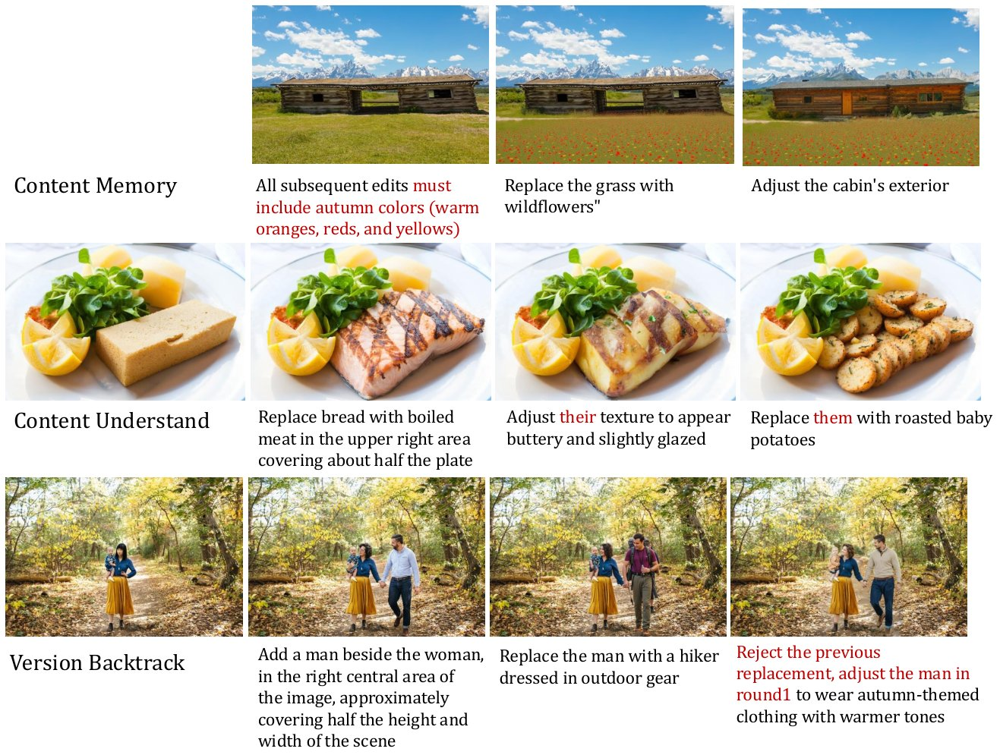
图 9：多轮数据样本。
图 8 与图 9 展示了 ImgEdit 数据集中的各类样本，涵盖全部编辑任务。
To incorporate positional information into captions, we included the original image resolution and the size of the bounding box in the prompt. GPT generates instructions using the following metadata format: “caption: {caption}, object: {object}, resolution: {resolution}, object bbox: {bbox}” combined with task-specific prompts.
为把位置信息纳入描述，我们在提示词中加入了原始图像分辨率与边界框尺寸。GPT 使用如下元数据格式生成指令：“caption: {caption}, object: {object}, resolution: {resolution}, object bbox: {bbox}”，并与任务专属提示词结合使用。
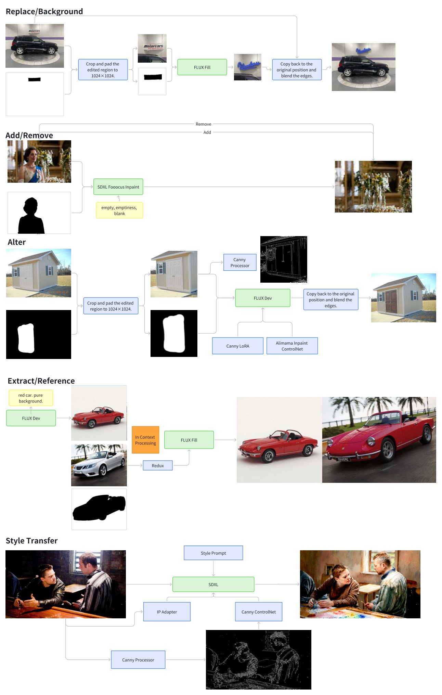
图 10：局部重绘工作流。
We developed an inpainting process tailored to each task by adopting the method from ComfyUI. This approach enables more effective utilization of advanced models within the community while offering a lightweight and user-friendly pipeline. The specific workflow diagram 10 is presented below.
我们借鉴 ComfyUI 的方法，为每项任务开发了定制化的局部重绘流程。这一做法能更有效地利用社区中的先进模型，同时提供轻量、易用的流程。具体的工作流示意图 10 如下所示。
Background change can be regarded as an extensive replacement task. Notably, we applied edge softening to the mask to mitigate abrupt transitions and ensure seamless editing effects.
背景替换可视为一种大范围的替换任务。值得注意的是，我们对掩码施加了边缘柔化，以缓解突兀的过渡并确保无缝的编辑效果。
Add and Remove are inverse processes. We adopted a mask inpainting approach and designed prompts incorporating terms such as "empty" and "blank" to achieve the editing results.
添加与移除是互逆的过程。我们采用掩码重绘方法，并设计包含“empty”“blank”等词的提示词来实现编辑效果。
For the attribute alteration task, we employed a Canny processor to generate edge maps as control signals. Additionally, we utilized Canny LoRA and ControlNet to perform the inpainting process, followed by softening the edges to enhance visual quality.
对于属性修改任务，我们采用 Canny 处理器生成边缘图作为控制信号；此外，我们使用 Canny LoRA 与 ControlNet 执行局部重绘，随后对边缘作柔化以提升视觉质量。
Object extraction and reference replacement are inverse processes. First, an object with a clean background is generated based on the prompt. Then, using Flux-Redux, the object in the real image is replaced with the generated object through in-context processing. The edited image and the object image are saved as use cases for object extraction, while the edited image, object image, and original image are saved as use cases for visual editing.
主体提取与参考替换是互逆的过程。首先，依据提示词生成一个背景干净的对象；随后，用 Flux-Redux 通过上下文处理，把真实图像中的对象替换为生成的对象。编辑后的图像与对象图像被保存为主体提取用例，而编辑后的图像、对象图像与原始图像则被保存为视觉编辑用例。
For style transfer, we employed SDXL due to its superior fidelity in reproducing diverse styles. We also used Canny edge detection to ensure that the finer details of the image remained unchanged.
对于风格迁移，我们采用 SDXL，因为它在复现多样风格时保真度更高。我们还使用 Canny 边缘检测，确保图像中更精细的细节保持不变。
The hybrid edit process followed the steps outlined above. This task was divided into two distinct editing iterations.
混合编辑流程沿用上述步骤，该任务分为两次独立的编辑迭代。
The multi-turn edit process also followed the steps outlined above. It was divided into three editing iterations, each with path dependencies.
多轮编辑流程同样沿用上述步骤，它被分为三次编辑迭代，每次迭代之间存在路径依赖。
This method extends a pretrained Stable Diffusion model into a image editor by fine-tuning its latent diffusion backbone on automatically generated triplets of (original image, edited image, edit instruction). During training, the network learns to denoise a latent corrupted by noise while simultaneously receiving the latent encoding of the source image and a text embedding of the desired edit. To achieve this, we augment the first convolutional layer with extra channels that concatenate the noisy latent and the source-image latent—these new weights are zero-initialized while all other parameters retain their pretrained values—and we repurpose the model’s native text-conditioning mechanism to process edit instructions instead of captions. This lightweight adaptation harnesses the rich generative knowledge of the original model and enables it to perform high-fidelity, instruction-guided edits with minimal additional training.
该方法通过在自动生成的三元组（原始图像、编辑图像、编辑指令）上微调其潜扩散骨干网络，把一个预训练的 Stable Diffusion 模型扩展为图像编辑器。训练时，网络一边对加噪的潜变量去噪，一边接收源图像的潜编码与期望编辑的文本嵌入。为此，我们为第一个卷积层增加额外通道，用以拼接带噪潜变量与源图像潜变量——这些新权重零初始化，其余参数保留预训练值——并把模型原生的文本条件机制改用于处理编辑指令而非描述。这种轻量化的改造利用了原模型丰富的生成知识，使其只需极少的额外训练即可完成高保真、指令引导的编辑。
First, a visual prompt projector takes CLIP-encoded image features and aligns them with text instructions, then injects this joint “visual prompt” into the UNet at each denoising step via cross-attention. Second, task-aware routing embeds Mixture-of-Experts blocks throughout the UNet: a lightweight router-informed by task embeddings—dynamically allocates each edit request to a subset of expert layers, so that different tasks invoke specialized attention pathways. Third, learnable task embeddings are inserted just before these MoE blocks to both shape the visual prompt and drive the decisions of router, ensuring that each editing operation fires at the right scale and scope.
首先，一个视觉提示投影器接收 CLIP 编码的图像特征，并使之与文本指令对齐，再通过交叉注意力在每一步去噪时把这一联合的“视觉提示”注入 UNet。其次，任务感知路由在 UNet 中嵌入混合专家（MoE）模块：一个由任务嵌入提供信息的轻量路由器把每个编辑请求动态分配给一部分专家层，使不同任务调用专门的注意力通路。第三，在这些 MoE 模块之前插入可学习的任务嵌入，既用于塑造视觉提示，也用于驱动路由器的决策，确保每次编辑操作在恰当的尺度与范围内触发。
The model fuses a multimedia large language model (MLLM), a lightweight connector, and a Diffusion-in-Transformer (DiT) backbone to deliver precise, context-aware image edits. First, the user’s edit instruction and reference image are jointly fed into a frozen MLLM (e.g. QwenVL) and become text feature input to our DiT network. In parallel, we average the MLLM’s output tokens and project them into a global visual guidance vector, injecting rich semantic context into the diffusion process. To train the connector and DiT in tandem, they concat a noise-corrupted target image and a clean reference image into token sequences, and presenting this fused feature to the DiT. By initializing from pretrained Qwen and DiT weights and optimizing both modules jointly at a low learning rate, our method achieves high-fidelity, semantically aligned edits across a wide variety of user instructions.
该模型融合多模态大语言模型（MLLM）、轻量连接器与 Diffusion-in-Transformer（DiT）骨干网络，以实现精确、上下文感知的图像编辑。首先，用户的编辑指令与参考图像一并输入一个冻结的 MLLM（如 QwenVL），成为我们 DiT 网络的文本特征输入。与此同时，我们对 MLLM 的输出词元作平均池化并投影为一个全局视觉引导向量，把丰富的语义上下文注入扩散过程。为联合训练连接器与 DiT，他们把加噪的目标图像与干净的参考图像拼接为词元序列，并将这一融合特征送入 DiT。通过从预训练的 Qwen 与 DiT 权重初始化，并以较低学习率联合优化两个模块，该方法在多样的用户指令下实现了高保真、语义对齐的编辑。
We have listed the specific scores of the model below 4.
我们在下面列出模型的具体得分 4。
表 4：各模型在 ImgEdit-Bench 上由 GPT-4o 评出的分数。
| GPT-4o-Image | Step1X-Edit | ImgEdit-E1 | UltraEdit | AnySD | MagicBrush | Instruct-Pix2Pix | |
| Addition | 4.65 | 3.90 | 3.82 | 3.63 | 3.12 | 2.72 | 2.29 |
| Removement | 3.81 | 2.61 | 2.40 | 1.71 | 2.34 | 1.57 | 1.49 |
| Replacement | 4.49 | 3.45 | 2.80 | 3.13 | 2.71 | 1.89 | 1.93 |
| Attribute Alter | 4.26 | 3.13 | 4.04 | 3.01 | 2.66 | 1.47 | 1.79 |
| Motion Change | 4.76 | 3.43 | 3.21 | 3.57 | 3.31 | 1.39 | 1.51 |
| Style Transfer | 4.75 | 4.44 | 4.38 | 3.69 | 3.27 | 2.49 | 3.54 |
| Background Change | 4.62 | 3.19 | 3.38 | 3.31 | 2.37 | 2.03 | 1.67 |
| Object Extraction | 2.96 | 1.87 | 2.55 | 2.02 | 1.82 | 1.31 | 1.33 |
| Hybrid Edit | 4.54 | 2.52 | 2.87 | 2.33 | 2.07 | 1.80 | 1.48 |
| UGE Score | 4.70 | 3.11 | 3.20 | 2.36 | 2.56 | 1.96 | 1.42 |
| Fake Score | 1.00 | 0.99 | 0.99 | 1.00 | 1.00 | 0.99 | 1.00 |
我们在图 11 与图 12 中分别列出 gpt-4o-Image 与 Gemini-2.5-flash 的部分测试用例。
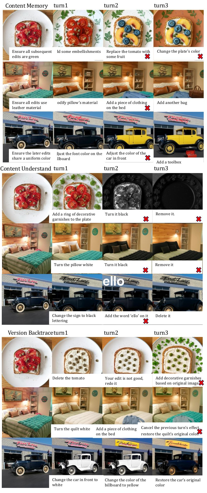
图 11：GPT-4o-Image 的多轮用例。
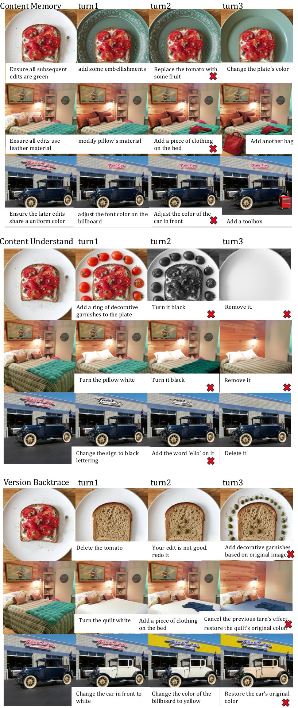
图 12：Gemini-2.5-flash 的多轮用例。